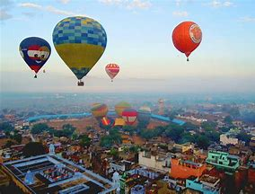

India offers a plethora of thrilling adventure trips that cater to every kind of adventurer.
From the majestic peaks of the Himalayas to the pristine beaches of Goa, there are countless opportunities to embark on adrenaline-pumping escapades.
One popular destination is Rishikesh, situated in the foothills of the Himalayas, known as the "Yoga Capital of the World" and a hotspot for
white-water rafting. The mighty Ganges River provides the perfect setting for an exhilarating rafting experience, with rapids ranging
from beginner-friendly to highly challenging. Additionally, Rishikesh offers activities like bungee jumping, cliff jumping, and trekking,
making it an ideal adventure hub.
Another exciting adventure destination is Ladakh, nestled in the northernmost part of India. Renowned for its breathtaking landscapes,
Ladakh offers an array of thrilling experiences. Adventurers can embark on high-altitude treks amidst the towering mountains, traverse the stunning
Nubra Valley on a bike or go river rafting in the turbulent waters of the Indus River. For the truly daring, there are opportunities for
mountaineering expeditions to conquer some of the world's highest peaks, including Stok Kangri and Kang Yatse. The unique culture and awe-inspiring
vistas of Ladakh make it an unforgettable destination for adventure enthusiasts.
Trekking in the Himalayas
Trekking in the Himalayas is an awe-inspiring adventure that immerses adventurers in the breathtaking beauty of the world's highest mountain range.
With its towering peaks, picturesque valleys, and serene alpine landscapes, the Himalayas offer a remarkable experience for nature enthusiasts and
thrill-seekers alike. As trekkers traverse rugged trails, they are rewarded with panoramic vistas of snow-capped peaks, cascading waterfalls, and
verdant forests teeming with diverse flora and fauna. The journey through the Himalayas is not just a physical feat but also a spiritual and cultural
immersion, as trekkers encounter remote mountain villages, ancient monasteries, and warm-hearted locals, who share their rich traditions and way of
life. Whether embarking on a challenging expedition or a leisurely trek, the Himalayas provide an unforgettable and transformative experience
amidst the grandeur of nature.
Estimated Price: 499-1999/-
River Rafting in Rishikesh
River rafting in Rishikesh is an exhilarating adventure that combines the serenity of the holy Ganges River with the thrill of conquering challenging rapids. Nestled amidst the picturesque mountains of Uttarakhand, Rishikesh offers a perfect setting for adrenaline junkies seeking an adrenaline rush. As you navigate through the turbulent waters, the stunning landscapes, cascading waterfalls, and lush greenery create a mesmerizing backdrop. Whether you're a beginner or an experienced rafter, Rishikesh has a variety of rafting stretches to cater to different skill levels, ensuring an unforgettable experience for all. Brace yourself for an adrenaline-pumping ride, immerse in the natural beauty, and embrace the thrill of river rafting in Rishikesh.
Estimated Price:399-2999/-
Wildlife Safari in Jim Corbett National Park
Jim Corbett National Park, located in the picturesque state of Uttarakhand, India, is a haven for wildlife enthusiasts and nature lovers seeking an exhilarating wildlife safari experience. This enchanting sanctuary, named after the legendary conservationist Jim Corbett, is renowned for its rich biodiversity and pristine natural beauty. As one embarks on a wildlife safari in this expansive park, they are greeted by the symphony of chirping birds, the rustling of leaves, and the distant roars of majestic tigers. The dense forests and meandering rivers serve as the backdrop for an unforgettable encounter with a diverse array of wildlife, including elephants, deer, leopards, and countless species of birds. Exploring the untamed wilderness of Jim Corbett National Park is an immersive journey into the heart of nature, leaving visitors in awe of its magnificence and inspiring a deep sense of conservation and respect for the fragile ecosystems that thrive within its boundaries.
Estimated Price: 699-7999/-
Scuba Diving in the Andaman Islands
Scuba diving in the Andaman Islands offers a mesmerizing underwater adventure that captivates divers with its breathtaking beauty. Located in the Bay of Bengal, this tropical paradise boasts crystal-clear turquoise waters teeming with vibrant coral reefs, exotic marine life, and an abundance of colorful fish species. Divers can explore a myriad of dive sites, each with its unique charm, from shallow reefs to dramatic drop-offs and thrilling drift dives. The Andaman Islands' underwater world reveals a captivating realm filled with magnificent coral gardens, mysterious caves, and sunken shipwrecks, providing divers with unforgettable experiences and the opportunity to witness the incredible biodiversity of this remote and pristine marine ecosystem..
Estimated Price:1999-39999/-
Paragliding in Bir-Billing
Paragliding in Bir-Billing, located in the scenic Kangra Valley of Himachal Pradesh, India, offers an exhilarating experience amidst breathtaking natural beauty. Known as the paragliding capital of India, this destination attracts adventure enthusiasts from around the world. With its favorable weather conditions, gentle slopes, and reliable thermals, Bir-Billing provides the perfect setting for both beginners and experienced paragliders to soar high in the sky. The panoramic views of the Dhauladhar mountain range, lush green valleys, and charming villages below make every flight a mesmerizing and unforgettable adventure. Whether gliding solo or tandem with an experienced pilot, paragliding in Bir-Billing is an adrenaline-pumping activity that combines the thrill of flying with the tranquility of the majestic Himalayan landscape.
Estimated Price:799-3999/-
Camel Safari in Jaisalmer
Embarking on a camel safari in Jaisalmer is an enchanting experience that immerses travelers in the mesmerizing beauty of the Thar Desert. As the golden sun casts its warm glow over the sprawling sand dunes, riders are greeted by the rhythmic sway of their trusty camels, traversing the undulating landscape with grace. The journey unveils a world of tranquility and serenity, as one ventures into the heart of the desert, marveling at the vast expanse of golden sands and the ethereal silence that envelops the surroundings. The camel safari in Jaisalmer allows for a glimpse into the traditional desert way of life, as nomadic villages, vibrant folk performances, and rustic campsites dot the route, providing an authentic and immersive encounter with the rich cultural heritage of Rajasthan.
Estimated Price:389-999/-
Skiing in Gulmargt
Gulmarg, located in the breathtakingly beautiful Kashmir region of India, is a paradise for skiing enthusiasts. Nestled amidst snow-capped mountains and surrounded by pristine natural beauty, Gulmarg offers a remarkable skiing experience that is unrivaled. With its vast expanses of powdery snow, Gulmarg attracts skiers from all over the world, seeking adrenaline-pumping adventures and breathtaking descents. The well-developed ski infrastructure, including well-groomed slopes and modern ski lifts, ensures a seamless and enjoyable skiing experience for both beginners and experienced skiers alike. As one glides down the slopes, embraced by the stunning Himalayan panorama, Gulmarg truly exemplifies the perfect blend of natural splendor and exhilarating winter sports, making it a cherished destination for skiing enthusiasts.
Hot Air Balloon Ride in Pushkar

A hot air balloon ride in Pushkar offers a truly magical and breathtaking experience. As the vibrant town of Pushkar awakens, the gentle giant of the hot air balloon gracefully lifts off, carrying passengers high above the ground. Drifting peacefully through the sky, the stunning panorama unfolds beneath, revealing the picturesque landscape of Pushkar. The golden dunes, serene lake, and the vibrant colors of the town create a mesmerizing sight. The cool morning breeze gently brushes against the faces of the passengers as they soak in the awe-inspiring views. With every passing moment, the tranquility and serenity of the experience become more profound, creating memories that will last a lifetime.
Estimated Price:999-7999/-
Caving in Meghalaya
Caving in Meghalaya offers an extraordinary and awe-inspiring adventure into the depths of the Earth's hidden wonders. Located in the northeastern part of India, Meghalaya is renowned as a caving paradise, boasting an intricate network of caves that have captivated explorers and nature enthusiasts alike. These limestone caves, carved over centuries by the relentless force of water, reveal mesmerizing formations, including stalagmites and stalactites, cascading waterfalls, and vast chambers that stretch into darkness. Venturing into Meghalaya's caves is an immersive experience, as adventurers navigate through narrow passages, wade through underground rivers, and marvel at the surreal beauty created by nature's artistic touch. The caving expeditions in Meghalaya provide an unparalleled opportunity to witness the intricate marvels of the subterranean world and leave visitors with lasting memories of a truly extraordinary adventure.
Estimated Price:499-1999/-
Bungee Jumping in Rishikesh
Bungee jumping in Rishikesh offers an exhilarating and adrenaline-pumping adventure in the heart of the majestic Himalayas. Nestled along the banks of the holy Ganges River, Rishikesh provides a stunning backdrop for this thrilling activity. As you stand on the edge of the jump platform, overlooking the lush green valleys and the rushing river below, a mix of excitement and nervousness fills the air. With the countdown underway, you take a deep breath and leap into the abyss, feeling a surge of adrenaline as you freefall towards the ground. The breathtaking scenery, combined with the heart-stopping thrill of bungee jumping, makes Rishikesh a must-visit destination for adventure enthusiasts seeking an unforgettable experience.
Estimated Price:490-2999/-
Motorcycle Road Trip to Ladakh
Embarking on a motorcycle road trip to Ladakh is an exhilarating adventure that promises breathtaking landscapes, adrenaline-fueled journeys, and an immersive cultural experience. As you navigate through the rugged terrains of the Himalayas, the winding roads reveal awe-inspiring vistas of snow-capped peaks, deep valleys, and crystal-clear lakes. The thrill of conquering high-altitude mountain passes like Khardung La and Chang La adds an element of challenge to the journey, while encounters with friendly locals and visits to ancient monasteries offer glimpses into the rich heritage of the region. Riding through Ladakh's starkly beautiful landscapes on two wheels creates an indescribable sense of freedom and connection with nature, making it an unforgettable experience for motorcycle enthusiasts seeking an unforgettable adventure.
Estimated Price:999-4999/-
Mountaineering in the Western Ghats

Mountaineering in the Western Ghats offers a captivating and exhilarating experience amidst the picturesque landscape of southwestern India. Known for its rich biodiversity and stunning peaks, this mountain range provides a challenging yet rewarding terrain for adventure enthusiasts. From the majestic heights of Anamudi, the highest peak in South India, to the rugged slopes of Kudremukh and the lush green valleys of Matheran, the Western Ghats present a diverse range of mountaineering opportunities. As climbers navigate through dense forests, cascading waterfalls, and steep cliffs, they are treated to breathtaking panoramic views of the surrounding valleys, tea estates, and mist-covered peaks. With its unique blend of natural beauty and thrilling escapades, mountaineering in the Western Ghats promises an unforgettable journey for those seeking an adrenaline-fueled escapade..
Estimated Price:699-5999/-
Desert Safari in Jodhpur
Experience the thrill and enchantment of a desert safari in Jodhpur, an adventure that transports you to a realm of timeless beauty and rugged landscapes. As you embark on this exhilarating journey, the golden sands stretch as far as the eye can see, casting a mesmerizing spell on your senses. The safari takes you through the undulating dunes, where you can witness the interplay of light and shadows, creating a breathtaking panorama. Immerse yourself in the rich culture of Rajasthan as you encounter traditional music and dance performances, indulge in mouthwatering local delicacies, and witness the mesmerizing sunset over the vast expanse of the Thar Desert. This unforgettable experience in Jodhpur combines adventure, culture, and natural splendor, leaving you with memories that will linger long after the sand has settled.
Estimated Price:999-7999/-
Kayaking in the Backwaters of Kerala

Kayaking in the backwaters of Kerala is a truly enchanting experience that immerses adventurers in the serene beauty of nature. As one navigates through the labyrinthine network of tranquil waterways, surrounded by lush greenery and swaying palm trees, a sense of tranquility washes over the soul. The rhythmic paddling creates a symphony with the gentle lapping of water against the kayak, while colorful birds and exotic wildlife add to the picturesque scenery. The backwaters offer a unique opportunity to explore hidden corners of Kerala, discover remote villages, and witness the daily lives of the local communities. Whether gliding through narrow canals or sprawling lakes, kayaking in the backwaters is an unforgettable journey that combines adventure, serenity, and an intimate connection with the mesmerizing natural wonders of Kerala.
Estimated Price:899-6399/-